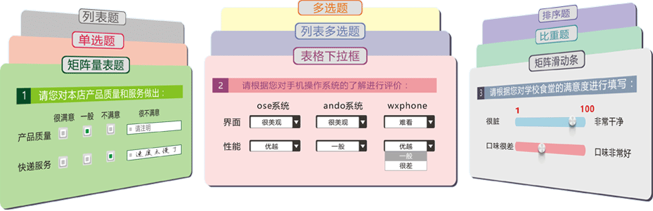
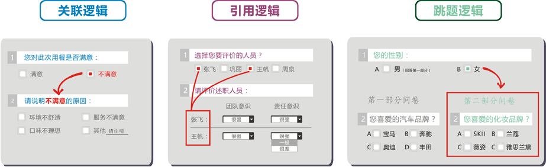
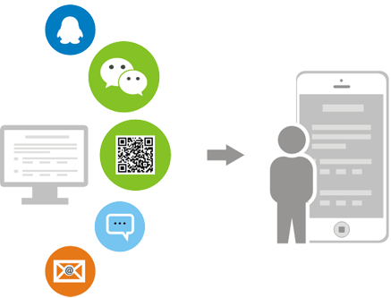
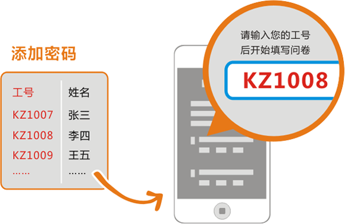
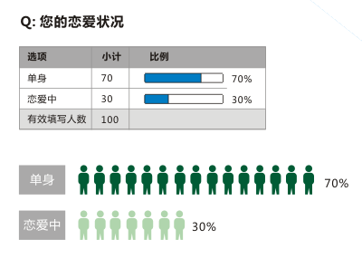
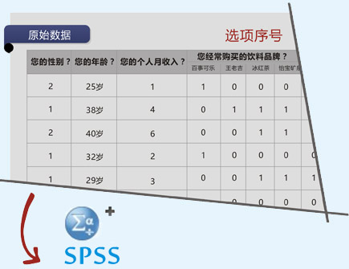
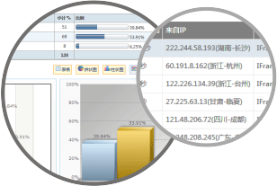

-
{{qq.cont}}
无论您身处的行业、从事的职业、担任的角色，
问卷星都可以帮助您轻松完成在线调查、调研及信息收集等复杂工作。
- 政府、学校
- 老师、学生
- 电商、网游
- 市场部、市场调查
- 企业HR
32种题型，应有尽有
单选、多选、矩阵、排序、量表、比重、表格、文件上传等多种题型

问卷逻辑，轻松实现复杂问卷
三种问卷逻辑，实现题目选项之间复杂关系

多渠道推送问卷收集答卷
跟踪被邀请人是否打开了问卷，是否填写了问卷
- QQ好友、QQ群、空间
- 微信好友、微信群、朋友圈
- 发送问卷二维码，好友扫一扫填问卷
- 群发短信邀请
- 群发邮件邀请


问卷密码
- 单个密码：设置唯一密码，轻松保护问卷
- 密码列表：使用工号、手机号等作为密码，
为每个填写者分配唯一密码 - 短信验证：输入手机号码，获取短信验证
码，两步完成验证！
设置抽奖，让问卷变得有趣，让填写者有动力
- 系统默认抽奖
- 自定义奖品
- 实物类：手机、平板、everything
- 虚拟类：积分、优惠券、红包拿到手软

- 频数分析
- 直观呈现数据结果，简单统计选项的频数。
- 分类统计
- 可以按性别、年龄、部门进行分类统计。
- 交叉分析
- 设定一个或多个自变量和因变量，进行交叉分析
- 分析结果可以下载到Word
- 统计分析的表格、图形等都可以下载到Word文档
Excel、SPSS数据下载
下载.sav的SPSS数据文件，用于更加高级的数据分析

典型问卷展示
不仅可以通过问卷星发起调查，还可以回收答卷，分析
数据，查看原始答卷

-
企业员工满意度调查问卷
-
员工满意度调查问卷
-
企业员工组织公平感与敬业度调查
-
大润发客户满意度调查
-
移动商务客户满意度调查
-
手机市场需求调查问卷
-
更多》

 产品
产品 客户
客户 支持
支持 产品
产品